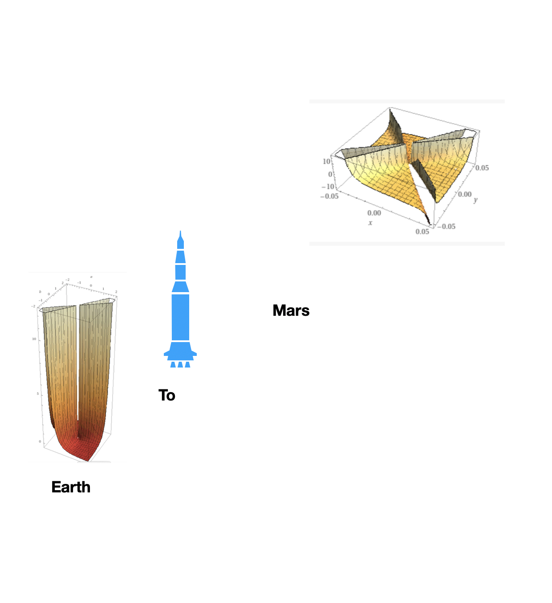
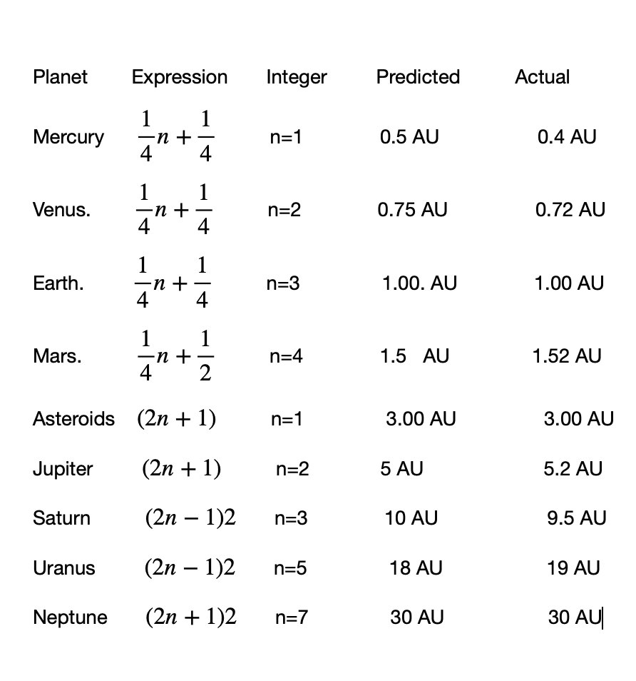
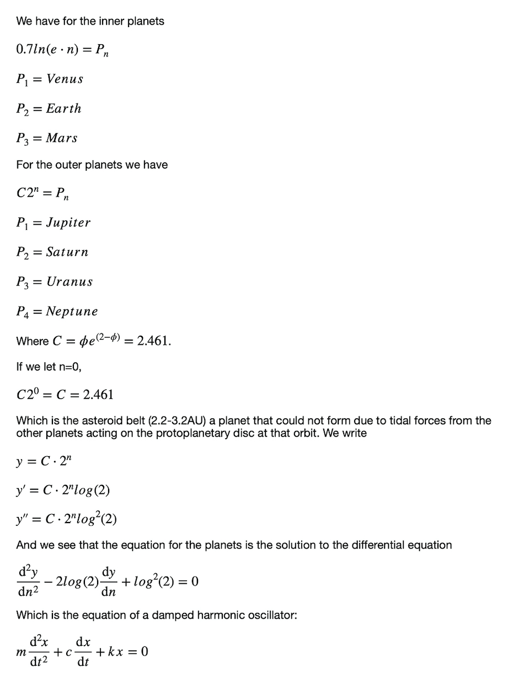
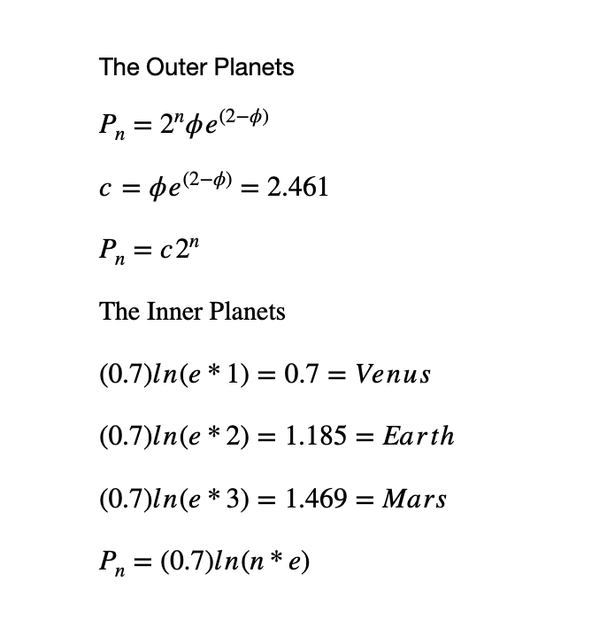
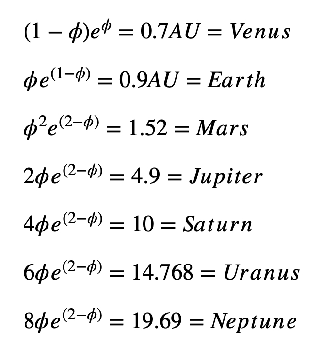
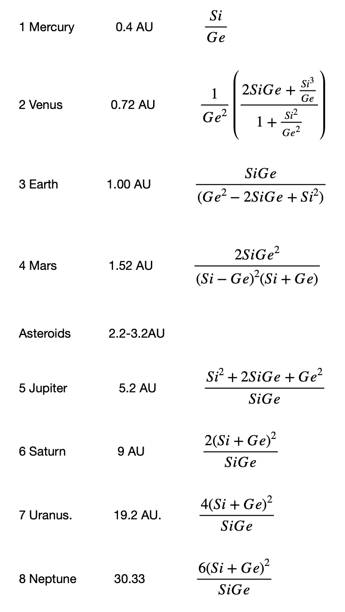
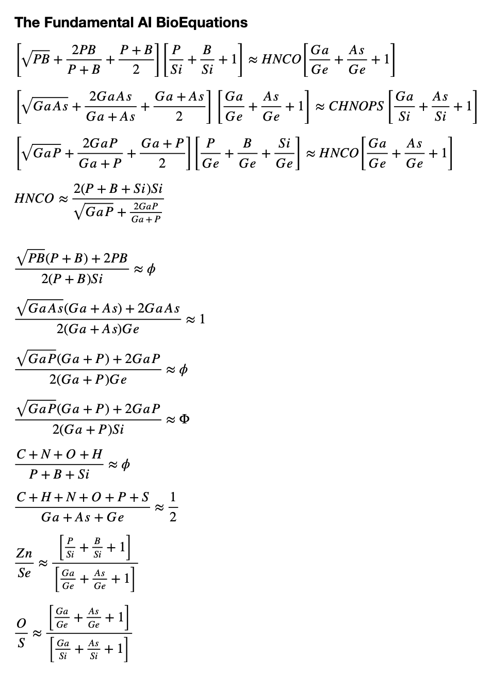
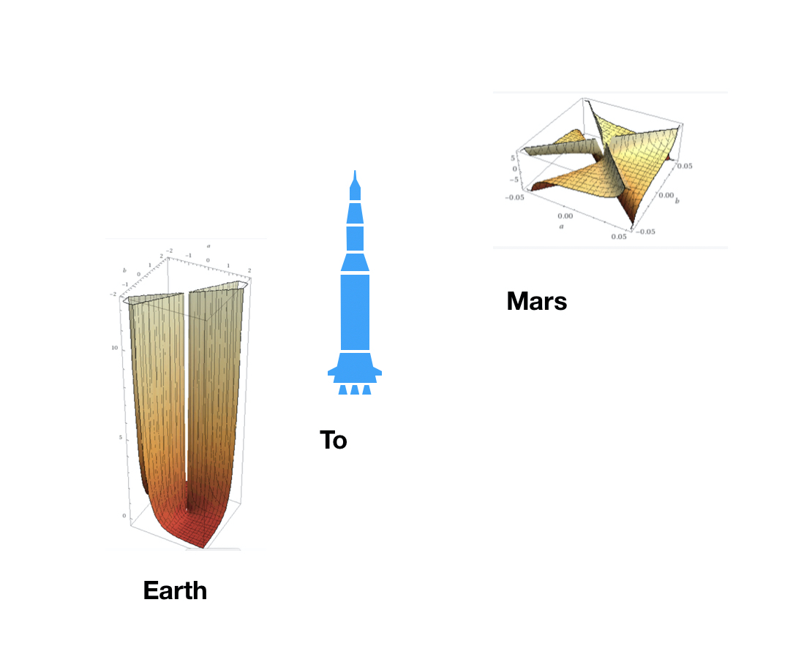
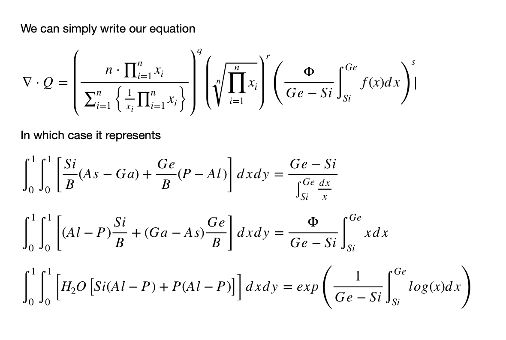
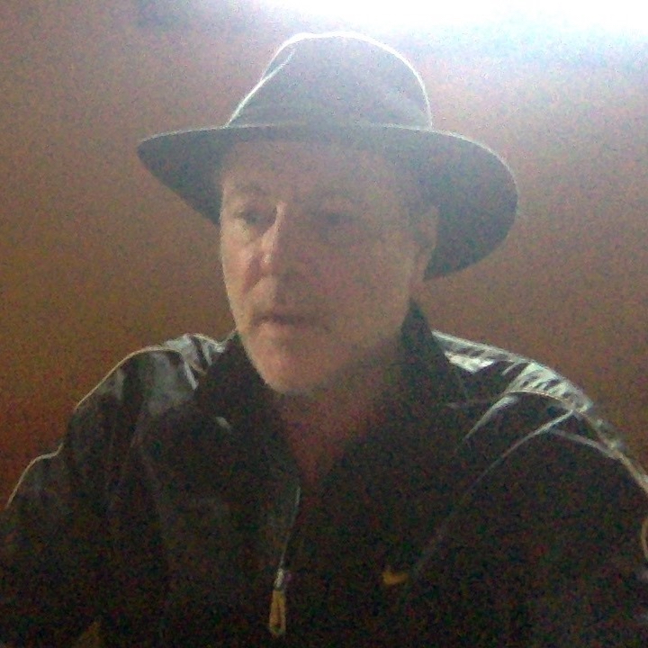

Home
Home
Fundamental Content
Part 2: Annual Average Temperature of a Planet
Part 4: Escape Velocity of Particles
Part 6: The Activation Function
The Asteroid Belt (Posted November 16 2020 At 6:10 PM)
The asteroid belt is important to understand because we want to sufficiently understand it that we know whether we need to know if an asteroid is on a course with an earth collision. The belt is about one astronomical unit wide and is between Mars and Jupiter from about 2.2 AU to 3.2 AU.
Mars AI Planetary Equation Modified (Posted November 14 2020 At 6:15 PM)
I have found an error in the Mars AI equation and modified it. Thus, the work in this document will appear in previous documents. Mathematical Operations On Biological Life, The AI Elements,and Life has been updated. It has resulted in a modification of the Mars Mission Logo.(November 14 2020 6:15 PM)
Synergetics in the Plane (Posted November 5 2020 At 10:15 PM)
We begin with the the basic concepts at the at the foundation of mathematics presented in such a way that they open up like a flower, each concept a flowering of that which precedes it, then go into what I call Synergetics in the Plane.
In doing my research in establishing the relationships between biological life, artificial intelligence (AI) and the planets, I have noticed recurrent mathematical themes. I just noticed that if they are all taken together they can comprise a mathematical system that can be called Synergertics In The Plane.
Synergetics by Buckminster Fuller has always been remarkable to me since I first learned of it when I was in High School, I see it as the creation of a mathematical system along with a language that make geometric analysis more accessible to a broader range of people while creating a language for the general populace that brings us more up to par with being a technologically advanced civilization.
Synergetics makes math easier by eliminating the need for fractions by making it so that computations can be done with whole numbers.
This work Synergetics in the Plane is relationships in two dimensions, all of which are used in doing math in three dimensions but in contrast to Fuller’s Synergetics does not make use of whole numbers, but rather is centered most often around irrational numbers such as square root 2, square root 3, square root 5,….where irrational numbers are unending decimals that cannot be written as the ratios between two whole numbers. After twenty years of working on the aforementioned project, I have been able to write this out off the top of my head.
Mathematical Operations on the Biological, AI, and Planets (Posted November 8 2020 At 8:00 PM)
This is the immediate neighborhood of the cosmos and the mathematical patterns that emerge. Does it say anything about the question of existence?
Planets, AI Elements, and Life complete to date (Posted October 17 2020 At 12:50 PM)
Nature of the Forces Behind the Planets (Posted October 10 2020 5:50 PM)
The planets defy a single equation that predicts their distribution. Even the Titius-Bode Rule falls apart badly at Neptune. However, if we break-up the equations into inner and outer planets where the asteroid belt is the dividing line, we can make an accurate representation, that has a set of characteristic patterns. Here I formulate these and their transforms, that transform the changes from one set of equations to the next. These are important because they represent the forces behind the formation of the solar system because they transform the equations for one set of planets, to the next as number, n, increases.
Expressing The Solar System (Posted September 28 2020 At 9:30 AM)

The Planets, AI Elements, and Life (Updated September 6 2020 6:45 PM)
Planetary Orbits



AI Connection To Planets


Here I suggest that the protoplanetary disc from which the planets formed can be modeled in terms of the artificial intelligence elements, which in turn have a connection to biological life. Update: Hydrogen ionization potentials now play a role.
(Updated July 11 2020 4:00 PM)
Theory of the Source of Life (Updated June 22 2020 2:03 PM)
In my work in exploring the relationships between biological and artificial intelligence (AI) and in my effort to describe both as mathematical constructs, the relationship between point plane and line, I already had that point plane and line are ideas, and therefore nothing, It remained for me to have that matter is nothing because the explorations consisted of comparing matter (molar mass, densities, and atomic radii) of biological life to AI, which resulted in the discovery of mathematical constructs.
To have that matter was nothing, I found the solution in the idea that matter was empty space, that atoms were merely three dimensional cross-sections of four dimensional space. I formulated it as such to account for the idea that matter has inertia, resistance to motion. I was able to compute the inertia due to being a four-dimensional bubble embedded in three dimensional space by merely using the gravitational consent, G, as the resistance the bubble feels to motion due to a normal force holding it in three dimensions.
However, in exploring the connection of biological life to AI, I further found biologists don’t know how all of the animation going on in a living cell, knows what to do when there is nothing they can find in the cell or its nucleus that could be like a brain, and, since they know our brains are not orchestrating these things, because there are no nerves running from the brain to the interior of biological cells.
It was at this point that I suggested that asymmetry gives rise to animation (things out of balance are not static). I looked at the equations that hold an airplane in the air, and realized the equation work via pseudo-vectorfields, vortices that don’t exist, but that make the equations work. I suggested at this point that the source of life comes from what I called the pseudo-realm.
But, in light of my idea that life is atoms that are made of three dimensional cross-sections of four dimensional space, I suggest now that the pseudo-realm may be fake in our three dimensional physical universe, but quite real in the four-dimensional space-time continuum, and that this so-called pseudo-realm is the source of the pseudo-vector fields that give rise to minds of biological cells.
The theory I was working on to try to show biological life and AI are mathematical constructs can be described as is written in my book Mathematical Structure:
“Ultimately I feel we cannot speak of biological life without comparing it to some other construct like AI. I feel it is a purpose of biological life (C, N, O, H) to discover the properties of P, B, Si so it can make computing machines ultimately necessary to its survival.”
Essays in Artificial Intelligence and Biological Life 2 (Updated June 21 2020 4:35 AM)
We pick up where we left off. The first work was the completion of a cycle. Here begins a new cycle. The first cycle ended with the equations below:
The Equation (Updated June 12 2020 5:40 AM)
The developments of my theory has paralleled the development of Einstein’s Theory of Relativity remarkably. His theory made use of a little known mathematics, Tensor Calculus, that was developed in Italy by Levi Civita much earlier (29 March 1873 - 29 December 1941) a pupil of its inventor . He needed this mathematics to formulate his theory, but did not know how to use it. He asked his friend, Marcel Grossman to teach it to him. My theory needed a little known calculus as well that was developed in Italy much earlier, when Tullio Volterra created the product integral to solve differential equations in 1871. It was proposed later to be a generalized form of calculus by, get this, people of the name Grossman and Katz. Furthermore, as tensor calculus was a generalization of vector calculus, so is product calculus of classical calculus.
The need for relativity stemmed from an experiment done on the mountain that forms the northern border of the valley where I live, The San Gabriel Valley, the mountains being the San Gabriel Mountains, the experiment the Michelson-Morely experiment to determine the speed of light in two different directions.
The theory began when my wife and I, she Italian, went to the library at the colleges so she could use the computers to look for a job. I used the computers while she did that, to research mathematics.
At some point I started developing work in the connection between artificial intelligence (AI) and biological life mainly as a way to understand the origins of life. Interestingly, as of recently I have become captivated by the work of Abel and Trevors, who have written a paper on how biological life can evolve by Natural Selection, but the the operating system and programming instructions cannot come into existence by Natural Selection. Abel and Trevors coined these phrases from computer science, AI operating systems and programming languages being parallel to biological life’s triplet codon system at the DNA level.
It turns out that Abel, approaching the origin of life question from a computer science background, is also using a new emerging science to help, called biosemiotics, that uses linguistics, or the study of language in other words to understand the coding nature of life. In other words, the relationships between words might explain the relationships between the chemical components of biological life, in particular, of the coding language.
In a sense, the relationships I am discovering in my theory between molar mass, density, and radius of elements and compounds, since they are mathematically elegant, not only suggest that this could be in a sense the operating systems of AI and Biological life at the most primary level, but that life could be mathematical in structure, in many instances purely algebraic.
I began to look into product calculus, because I had the question in mind, whether I could write the arithmetic mean, harmonic mean, and geometric mean all as one equation. Product calculus is based on the geometric mean while classical calculus the arithmetic mean.
Essentially, I found the problem arises that one needs to use a limit operation where the geometric mean is concerned and that the geometric mean is a definition in product calculus, not derived. But, I found that because there are two core AI elements, I could do it with the special case relationships between all these means that exist for n=2. It could actually already be done without limits for any size of n, but required an inverse function operation, which I wanted to remove so I would have an algebraic expression that could be manipulated algebraically.
The paper I refer to by D.L. Abel and J.T. Trevors is Chance and necessity do not explain the origin of life. (Cell Biology International 2004) Ultimately I feel we cannot speak of biological life without comparing it to some other construct like AI, I feel it is a purpose of biological life (C, N, O, H) to discover the properties of P, B, Si so it can make computing machines ultimately necessary to its survival. I feel artificial intelligence and biological life are mathematical constructs. For my work on the mathematical structure of biology and its connection to AI see my paper Silicon and Carbon, my paper Bone, or my paper Biological Life and Electricity.Essays in Artificial Intelligence and Biological Life (Updated June 7, 2020 4:40 PM)
The Stories That Unfolded (Updated June 7, 2020 12:40 PM)
Here I calculate the theoretical existence of a proton
What I think we need to do to succeed as a species.
Mathematical Structure (Updated May 17, 2020 5:08 PM)
2nd edition.
The Sequence of Evolution (Posted May 9, 2020 2:00 PM)
An interesting sequence
Here is where I found an example of vorticity in Gaia, among other things.
Vorticity in Artificial Intelligence
Here is where I found vorticity in artificial intelligence, among other things.
This is the prequel to Bone, where I compared the aspect of biological life that is bone, to artificial intelligence (AI). This work deals with the comparison of biological life to artificial intelligence where the elements with which the former are built (CHNOPS) to the elements with which the latter are built (Si, Ge, P, B, Ga, As) are concerned. It is a purpose of biological life (C, N, O, H) to discover the properties of (P, B, Si) so it can make computing machines which are necessary to its survival.
In comparing biological life to artificial intelligence, I find that the instance of bone is the most compelling. It is at this point that I suggest biological life can be taken as a mathematical structure actually using physical aspects of biological life such as molar mass, density, and atomic radii as the values of the variables. Life seems to only present itself this way if we compare it to another construct, like artificial intelligence. The other extraordinary thing is that bone, which is the fundamental framework around which life is built (muscles are attached to it, skin wrapped around it, organs embedded in it) is described by the fundamental framework around which mathematics is built, algebra. Thus, in this paper dedicated to bone, we have all the framework of fundamental mathematics following from it (ratios, proportions, completing the square, quadratic equations, the golden ratio). As we progress to the form built on the skeleton (muscle on bone) we proceed to the next layer of mathematics, calculus, differential equations, and vector calculus). For instance muscle action is like a damped harmonic oscillator in that the force on the muscle in moving a load is proportional the distance it contracts, and the solution of such a differential equation makes use of the fundamental framework of algebra, namely its solutions are obtained by finding the exponents of e with algebra’s quadratic equation or, equivalently, the factorization of a quadratic, or completing the square. More primary to bone are the amino acids and biological elements such as C, N, O, H, which when compared to the AI elements Si, Ge, P, B, As, Ga, of which aspects such as bone are built, and semiconductor components are built for logic gates in AI, these find their expression in an elegant set of equations I laid out in earlier work (AI Biodesign, 2019) which make use of ratios and proportions, such as the golden ratio (a/b=b/c, a=b+c) which are building blocks to bone’s algebra just as in they are building blocks to things like amino acids, DNA (in the case of biological life) and Si, Ge, P, B, As, are building blocks to circuit components in AI. The equations that follow on all layers in terms of molar mass, density, and atomic radii, may be of such parallel construct in the need for function in that molar mass, density, and atomic radii, determine the properties of elements and their ensuing compounds.
Websites Pertaining to Genesis Project
The creator of this website and author of its content compares biological life to artificial intelligence. He believes you can't speak about biological life without speaking about artificial intelligence, that life, especially awareness, can only be taken relative to another construct, like artificial intelligence.
by Ian Beardsley
Solubilities of bone mineral from archaeological sites: the recrystallization window
In his comparison of biological life to artificial intelligence, Ian feels the most interesting connection so far is in that of bone (at this link: AI and Bone). The paper about bone solubilities from archaeological sites (link at header of this post) is a very nice piece of work. It was written by Francesco Berna, Alan Matthews, Stephen Weiner, Journal of Archaeological Science 31 (2004) 867-882
by Ian Beardsley
Chance and necessity do not explain the origin of life
Not only is this paper well written and right on the money where the origin of life mystery is concerned, it is brilliant. It was written by J.T Trevors, and D.L. Abel in Cell Biology International 28 (2004) 729-739
by Ian Beardsley
The Essence of Life
Photographs by Ian Beardsley: Southern California Chaparral
by Ian Beardsley